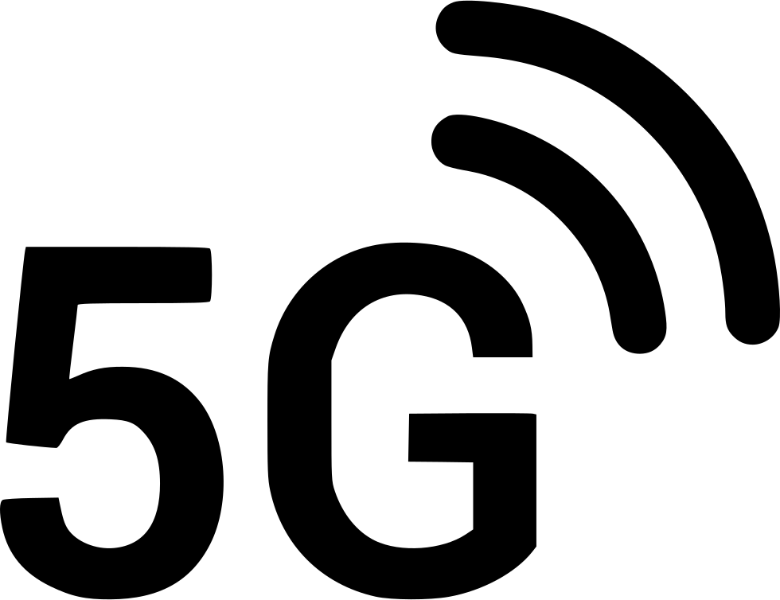

Impacto en la Sociedad
Las tecnologías web han transformado la forma en que las personas interactúan, se informan y se comunican.La tecnología ha tenido un profundo impacto en la sociedad. Por una parte, la tecnología ha generado mejoras significativas en la atención médica, el transporte, la comunicación y otras áreas. Los avances en la tecnología médica han llevado a una mayor esperanza de vida y una mejor calidad de esta para muchas personas.
Cambios Sociales
- Comunicación instantánea
- Acceso a la información
- Redes sociales
TECNOLOGIAS DE LA ACTUALIDAD
- Teléfonos inteligentes
- Computadoras personales
- Auriculares de realidad virtual
- Redes 5G
Los teléfonos inteligentes son más importantes que nunca, ya que se están convirtiendo cada vez más en la forma principal en que las personas acceden a Internet y se mantienen conectadas entre sí.

Aunque los teléfonos inteligentes han ganado una participación de mercado significativa, las computadoras personales siguen siendo dispositivos tecnológicos cruciales, especialmente para fines comerciales y de productividad.

Los auriculares de realidad virtual se están volviendo cada vez más populares y ofrecen experiencias de juego y entretenimiento inmersivas que antes se creían imposibles.
Se espera que el despliegue de redes 5G tenga un gran impacto en la tecnología en los próximos años, ya que ofrece velocidades de carga y descarga más rápidas, conectividad más confiable y la capacidad de admitir una amplia gama de nuevas aplicaciones y servicios.
